来源：https://y73fjvnan1.feishu.cn/docx/BUyZddBgXozRvsxmiAxcpuW6nhd
省流版本：
以下是话唠版本：
从 3 月底正式开始在抖音电商直播，到 6 月 20 日暂停项目，遣散员工，满打满算，刚好是 3 个月时间。三个月的时间里，除了主播还是那一个，我换了 3 个运营，换了办公室和直播场地，换了主推产品和客群，依旧没能起来。
没有成功的原因有很多，比如：
我将这三个月的经历，按照三任运营的在职情况，分为三个阶段：
我面试了大概几十个在义乌的抖音直播运营，80%的风格是：
我不是来应聘的，我是来挑项目的。
一看老板懂不懂行，
二看货品利润率高不高，
三看团队配置齐不齐，
四看自由度大不大；
面试第二天的时候，我遇见了第一个运营，他之前做过同类目的直播间，起过号，甚至给我看了前公司抖店和千川的后台，我觉得他说的东西和我的想法差不多都能匹配上，且他也不介意我这里是一个只有主播和场地的小团队，于是直接第二天上班。
作为一个初创团队，前期我的直播间是蹭的朋友空置的办公室，搬了一台电脑，架了一台手机，直接开播。
之前一直在上海工作，身边的同事整体素质都还比较高。我相信“专业的人做专业的事”，于是第一任运营和我说，他之前是做自然流低价起号的，这个账号也可以这么干。我同意了。
出厂价 17 元的产品，他在抖音上 19.9/件卖，7 天无理由+运费险。
为了避开黄金时间与大主播抢量，直播时间定在了早上 6-10 点，和晚上的 22 到第二天的凌晨 2 点。大概播了 3-5 天的自然流，场观只有 500，大概只出了 3 单。
运营说：“这样不行。今年低价自然流做不起来了，我们直接上付费吧。”
于是我迎来了第一个深坑：付费卖低价。
用手机拍了一些短视频素材之后，他通过投短视频素材往直播间导流。第二周的时候就误打误撞拍出了一个小爆款，在不投 DOU+的情况下，跑了 90W 的观看，直播间场观破千，单场销售破 500 元，但是用户画像都是以 40-50 的老男人为主。
但是 19.9 做付费 ROI 肯定打不平，于是运营把价格调整为 29.9/件，49.9/2 件，也还跑得动，最高 ROI 可以到 3 以上，然而如果以这样的定价想要打平，ROI 至少要做到 5 以上。
运营每天都在向我申请更高的千川投流预算，我说初期我可以亏本跑，但是如果想要发量，ROI 必须要到打平以上水准。为此有过好几次的摩擦。
压死骆驼的最后一根稻草是，当整体直播间数据一路向上，GPM 破 2000，单场 GMV 从 1000 逐渐提升到 5k 6k 8k 时，运营请假断播了。然后我们就再也没有回到之前的状态，又跌落到原本的直播 4 小时，销售额不到 500 的状态。
再加上运营一直不满意我对他操控太多，包括：不给他足够的千川投流预算，复盘时会问他太多问题，于我之前提出了离职。
第二任运营，我给他的绰号是99爹，面试时骗我是 99 年出生，天天试图教我做人。
他就是我在做抖音直播上最大的深坑——不要勉强自己和气场不和的人一起工作。
第一任运营离开后，为了不断播，我自己做运营和主播合作直播了半个月。
为了提升曝光进入率，我重新租了直播场地，把手机直播换成摄像机直播，依据行业头部账号重新调整了产品卖点和话术，直播间数据依旧上不去。
我意识到自己之前只知道理论，实操依旧需要一个懂行的人带一带。于是开始第二轮面试，面试了 N 个运营后，我感受到义乌直播运营的浮躁和人才的参差。
我开始自我反思：
是不是我对第一任运营要求太高，太 mean 了？
是不是我自己太情绪化，影响了团队？
我可能没有给他足够的支持和信任，所以账号才没有做起来？
第二任运营面试时准备充分，还写了一份策划书，态度之好，让被连续咕咕的我深受感动。
那份起号策划书也写得有模有样，于是我就让他来试一试。
但在面试时，我就感觉到我和他在未来工作场合很容易产生矛盾。
事实证明他的确是在第二天就朝我拍桌子说不干了，指着鼻子骂我“什么都不懂还什么都要管”。
我痛定思痛，在第一任运营身上犯的错不能在第二任运营身上再犯，于是我给出了更多的预算和更大的自由度，也就是这么一点自我 PUA，让我跌入了深渊。
他做了 2 件事，也成为了这个账号直接作废的两个深坑：
1.直接把 49.9/2 件的价格抬到了 89.9/2 件，突然的直线涨价，完全不是原有人群标签能够接受的价格，直播间转化率直线下降，标签被打乱；
2.为了提升更多明面上的转化率，他直接把千川出价从原来的 20 上下提高到了 70 以上，在精准人群标签和模型都还没有完全稳定的情况下，直接通投拉满，通过增高流速来拉高 GMV，模型也被打乱；
第二任运营满打满算，其实就在我这里入职了 6 天，但就是这 6 天，干的这 2 件事直接打乱我的账号标签，同时也跑费了我的千川账号，ROI 从原来的 3.02 掉到了 0.89。
我意识到这么下去不行，要求他离开。
其实在他第二天拍桌子和我说不干了，我就应该直接给钱拉黑，让他走人。而不是因为他后来的滑跪和主播说“不要错过任何一个可能”而再给机会。
运营临走前和我说：“你太在意别人对你的看法了。你自尊心那么强，别人说的话你第一反应是不相信。聪明的人会请教，而不是像你这样审视。
你看我脸色是应该的，后面不管谁来投产只要做到 2、1.5，你就要看他脸色。不然没有一个有能力的人在你这里干得下去。
我其实是 01 年的，我自己存款有 18 万我有和你说过吗？年底我是要创业的，你才这么几天就接受不了，你就算有 100W 也亏不明白。
我已经很努力在和你讲抖音的底层逻辑，你不虚心学习，反而质疑我。你让我知道一个道理，不要试图和女人讲道理。”
原地爆炸。
第三位运营曾经在上海、杭州的抖音 DP 呆过，做事风格非常职场化。和他一起工作的氛围是最舒服的，但是过于职场化的劣势在于，他只会做分内事。
家里的产品自从涨价后，转化率一直走低。于是我参考了行业 TOP10 的直播间，拿了一模一样的爆品+话术框架+短视频框架，企图复刻起号。
运营的确按照我的思路，调整了直播间的运营思路，同时也依据自己账号的情况，稍微调整了一下主播的话术。
但之前的账号数据做得太乱了，导致账号进来的流量一直不太稳，他也只能稳住现状，尝试解决问题，但是始终没能解决问题。
到停播的前一周，几乎都是每天直播 3 个小时，然而只出单 1-3 单，下播可能还要再退 1 单。
而商品卡因为之前积累的链接权重，每天还能有 2-3 单的自然出单。
店铺直播，越直播越绝望。
运营和主播也都开始丧失斗志。
于是 6 月 20 日，我遣散了团队，结束了第一次的抖音直播尝试。
其实，我做抖音电商最大的坑是：将账号做起来的期望全部都寄托在别人身上。
3 个月 20W，在做抖音电商直播领域似乎只是一个很小很小数字，甚至有人问我：“有没有可能，你抖音没有做起来，是因为亏得不够多？”
那有没有可能，抖音电商是一个连亏钱也要讲究实力的地方？
3 月 25 日正式开播，配备 1 个主播 +1 个运营，手机直播。
主推产品价格 19.9 元/件，成交客单价 23.4 元/人，商品点击-支付转化率 19.16%。
自然流低价起号，播了一周没有量，后面直接开始千川付费介入，主推品价格提升至 29.9/件。
3 月 GMV 7340.6 元，直播带动销量 5103 元（有一部分的朋友刷单，出新手村）
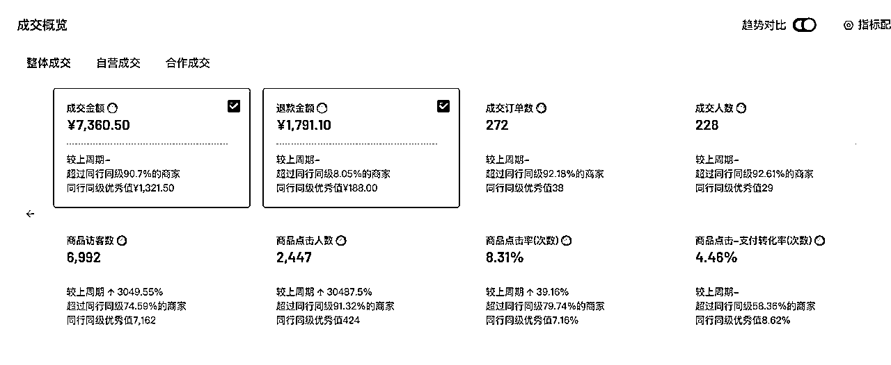
4 月开始主推 2 件装，价格调整为 49.9 元/2 件，千川短视频素材投流+小店随心推广。
成交客单 46.43 元，商品点击-支付转化率 16.91%，退款率 35.93%。
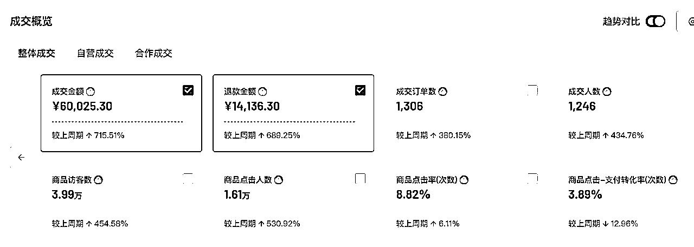
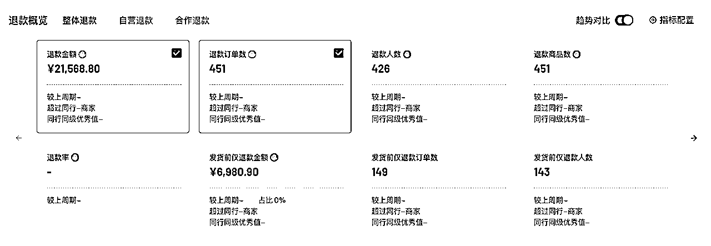
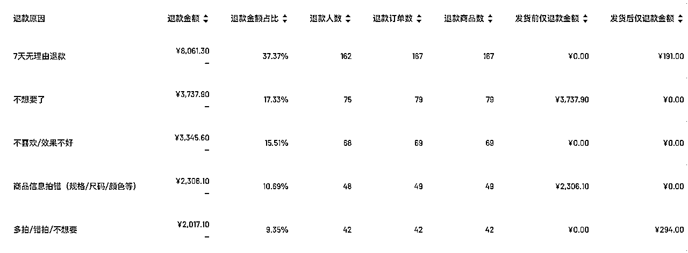
这里的退货大部分是因为：
改进方法：依据用户反馈，后面又重新调整了一个版本的尺码推荐。
改进方法：仓库提前打开包装袋散味，发货前重新包装
改进方法：调整主播话术，降低消费者对产品的预期
4 月总直播场次 27 次，直播天数 24 天。
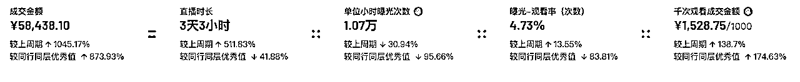
曝光-光看率偏低，原因是前期一直都是在用手机直播，画面质量不高，后面使用了相机直播+新的直播场地+买赠贴片，曝光观看率稳定在 9%上下。
5 月保持产品主推 2 件装，价格从 49.9 元/2 件提升至 89.9 元/2 件，跑不动又降价调整为 49.9/件，69.9/2 件。
千川短视频素材投流+小店随心推广，通投拉满，千川账号直接跑废，ROI 从 3.08 掉到 0.85。
成交客单 46.43 元，商品点击-支付转化率 16.91%，退款率 40.57%
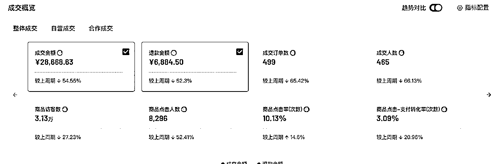
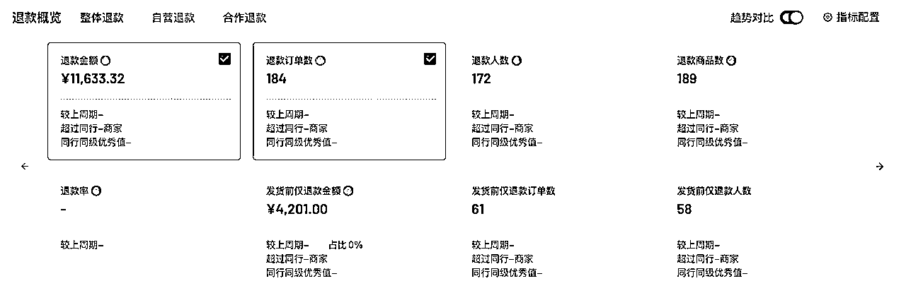
这里的退货大部分来自于第二任运营狂开付费之后进来的那几场直播，最高单场直播退货率达 70%，人群标签完全混乱。消费者觉得产品不值得。（包装后期需要迭代）
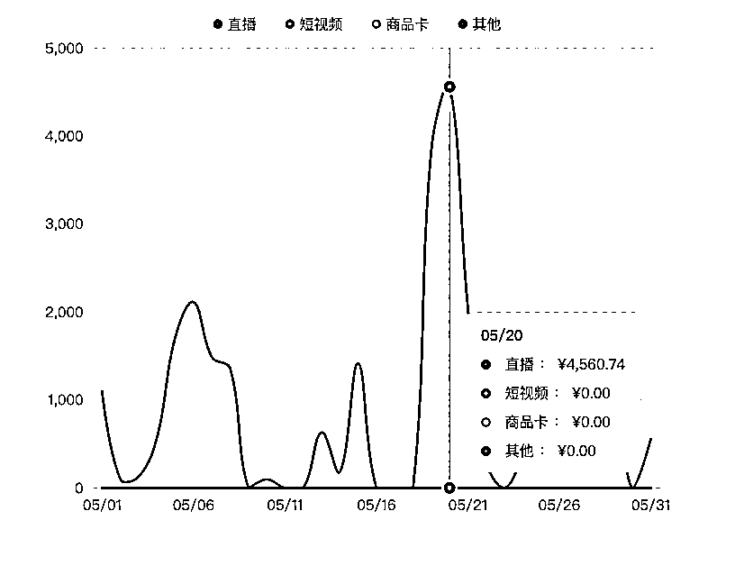
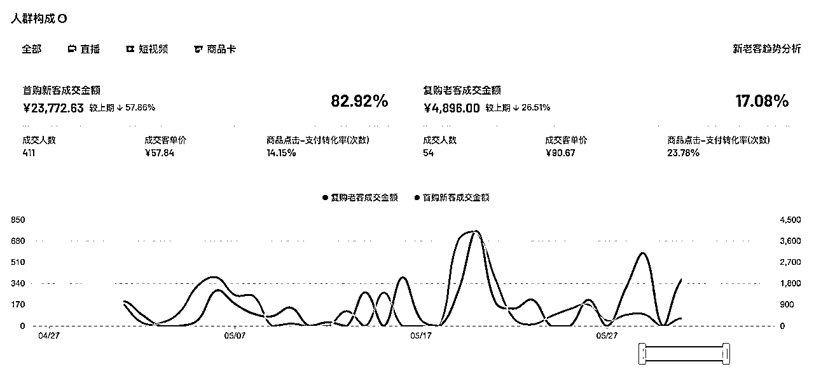
5 月共直播 24 次，开播 22 天。
客单价 51.90 元，商品点击-支付转化率 18.91%，退款率 49.63%。
直接抄头部直播间的货品，拿了一样的品，降价 10 块钱卖。
没有再跑千川，每天都通过小店随心推直投直播间画面，ROI 在 1 上下。
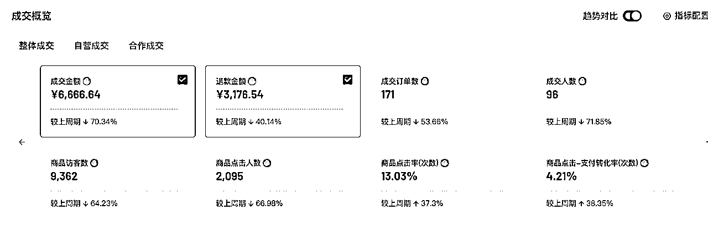
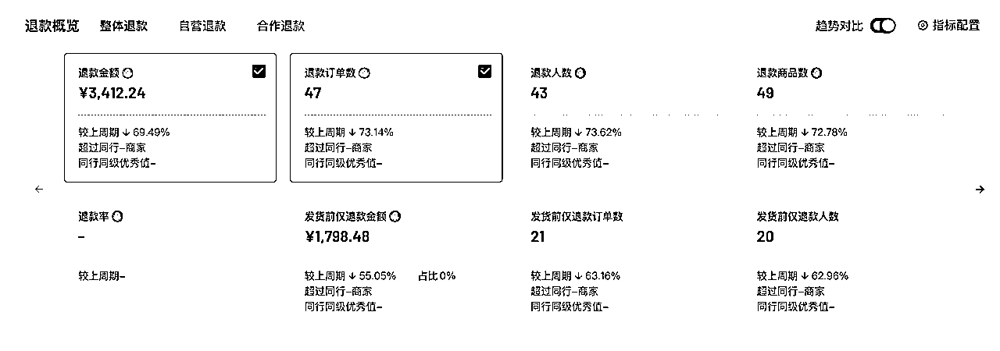
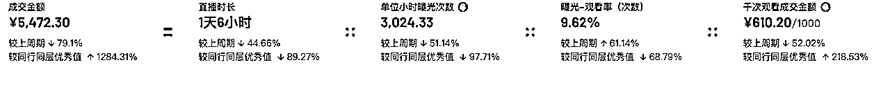
退货原因：